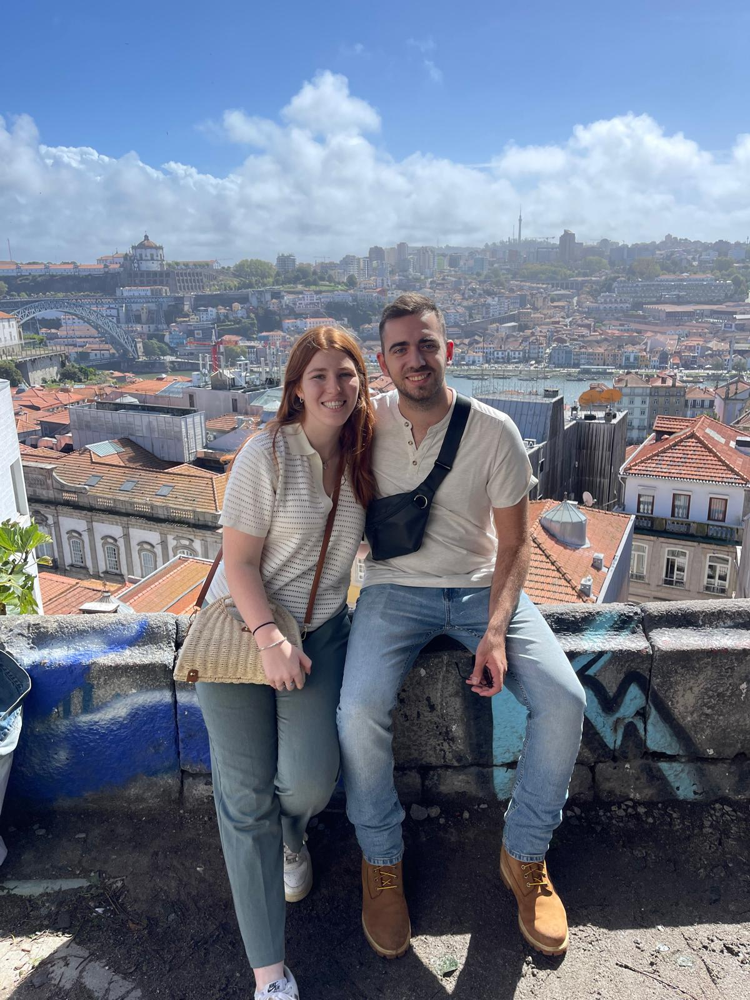
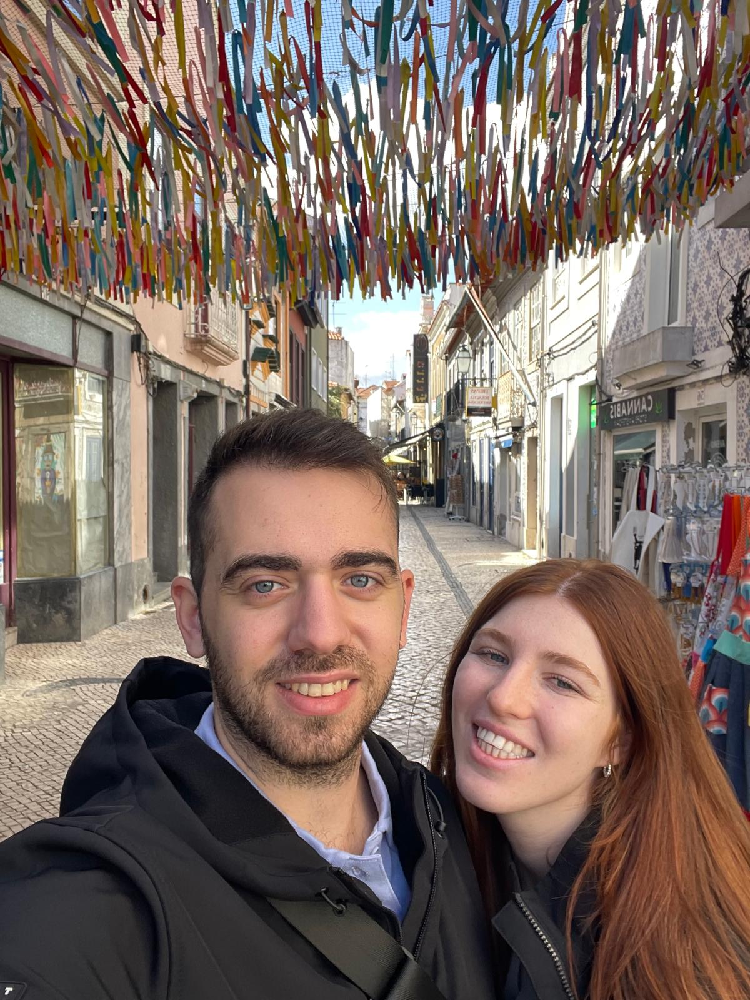
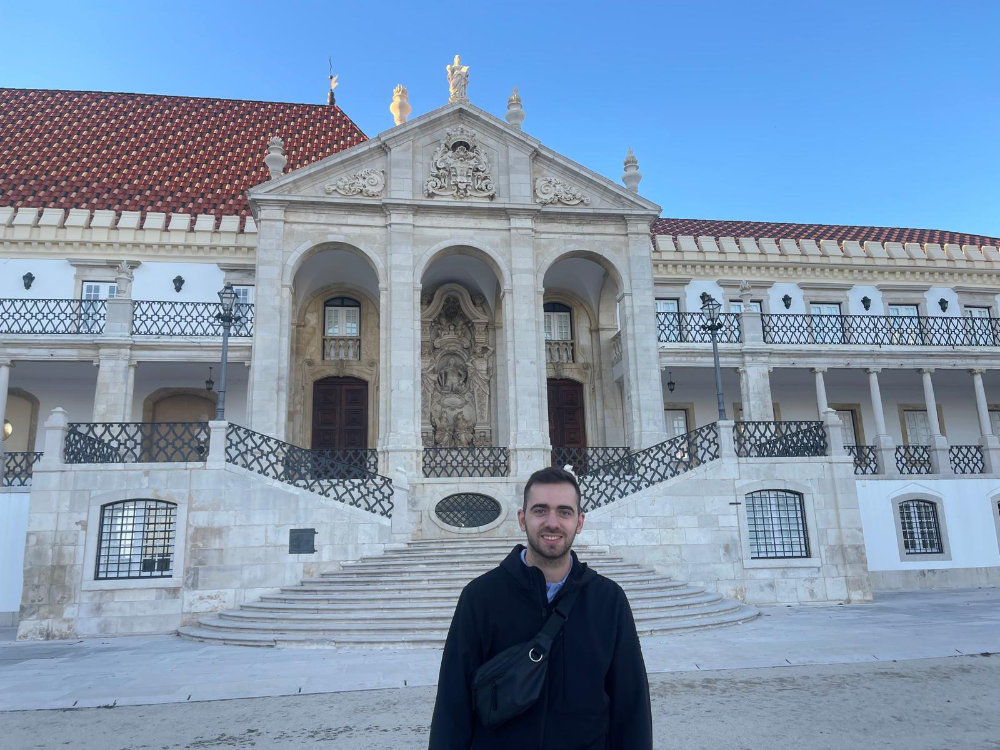

I traveld to Portugal and got to know this remarkable place.
In this site I wish to give you my perspective from my trip through pictures from every site I visited.
We started our journey in landing on Humberto Delgado Airport in Lisbon at 22:00 hoping to catch the last train to Porto.
We missed it in only few mintues and looked for another way to reach Porto. It is important to mention that the drive between Lisbon to Porto takes about 4 hours.
After we haven't find a train or a bus we Decided to use Bolt wich similar to Uber. After 4 hours drive and one hour of charging the driver's electric car and 200 euros less we arrived Porto at 02:30 AM.
We stayed for two days and had to most amazing time we could.

From Porto we took a train to Aveiro which also known as "Vencie of Portugal" but we guess whoever called it that way was never in real Venice.
We arrived and placed in a wondeful hotel we a great view over the main river the cross the city. Afternoon we went for a nice boat cruise with local guide.
At the morning we ate a nice breakfest and then we tried the local traditional destert called "Ovos moles de Aveiro" (literally, "soft eggs from Aveiro"). It is basiclly egg yolks and suger, we didn't like it to much...
From Aveiro we continued by public transportation to another great city named Coimbra.

Coimbra is a beautiful old city and it houses the oldest university in Portugal. People from all over Portugal come to study at Coimbra university.
We arrived and placed in a wondeful hotel we a great view over the main river the cross the city. Afternoon we went for a nice boat cruise with local guide.
At the morning we ate a nice breakfest and then we tried the local traditional destert called "Ovos moles de Aveiro" (literally, "soft eggs from Aveiro"). It is basiclly egg yolks and suger, we didn't like it to much...
From Aveiro we continued by public transportation to another great city named Coimbra.
